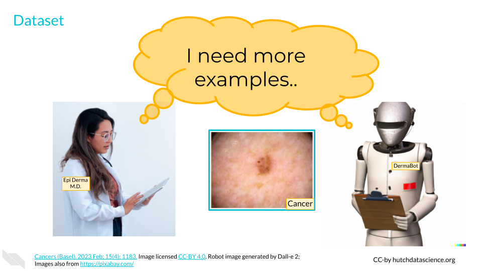
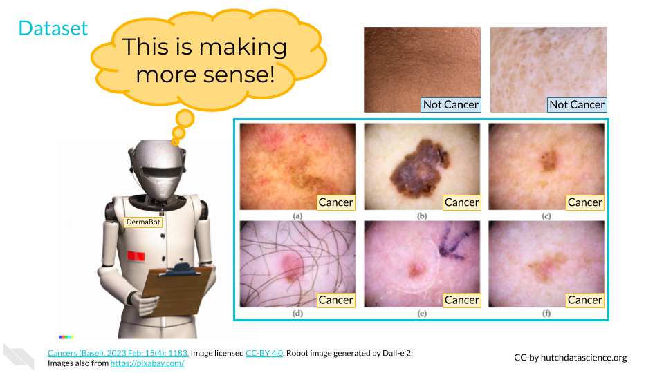
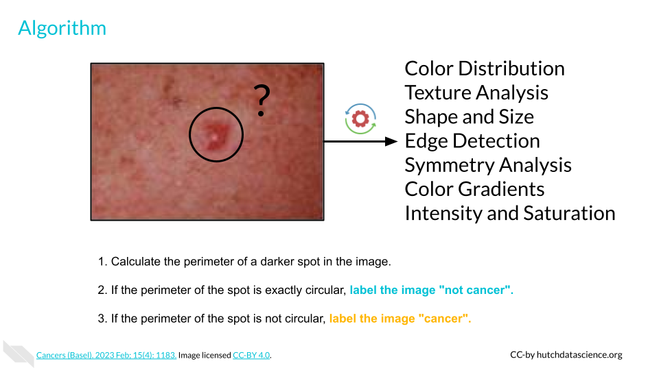
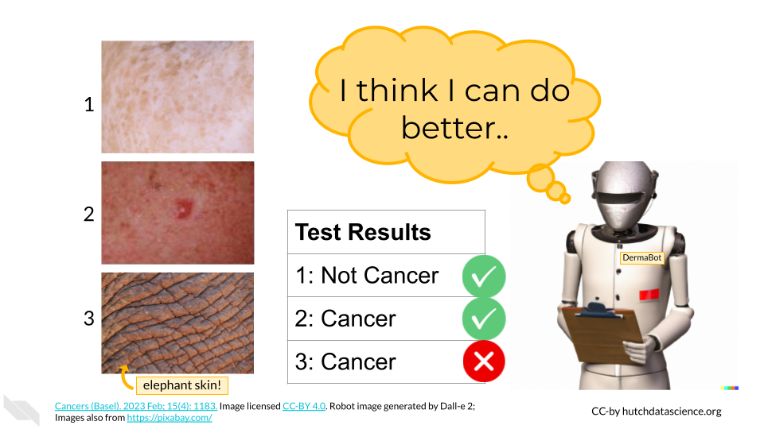
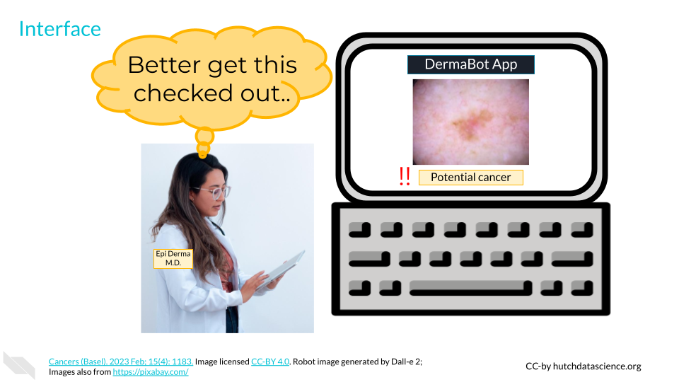
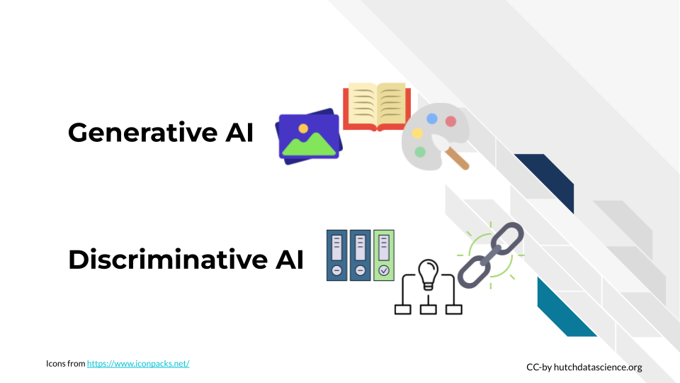
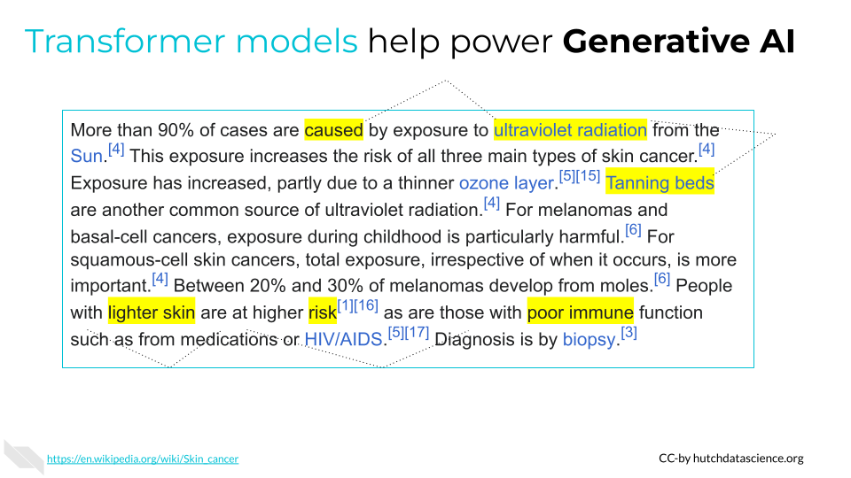
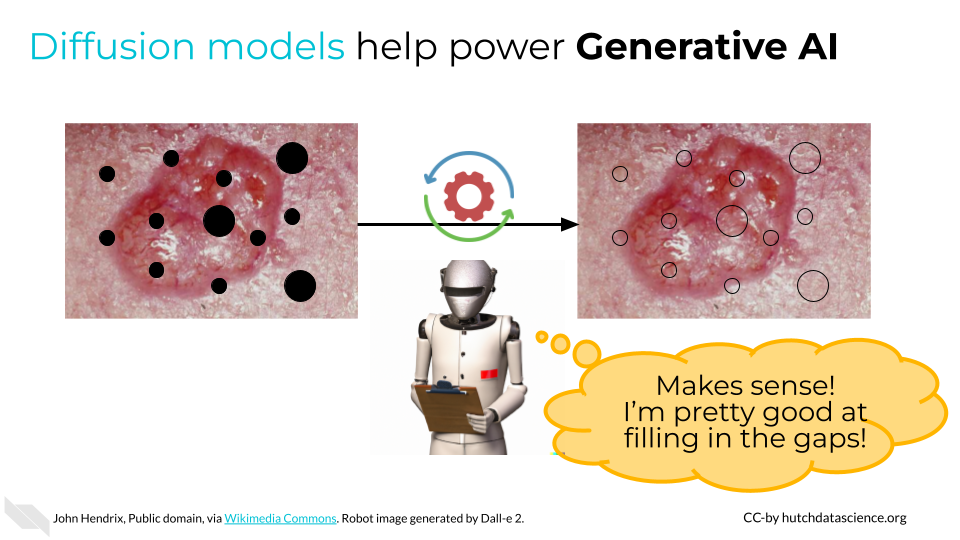

How AI Works
Let’s briefly revisit our definition of AI. It must have some data, an algorithm, and an interface. Let’s break these down in more detail below.
Early Warning for Skin Cancer
Each year in the United States, 6.1 million adults are treated for skin cancer (basal cell and squamous cell carcinomas), totaling nearly $10 billion in costs (CDC 2023). It is one of the most common forms of cancer in the United States, and mortality from skin cancer is a real concern. Fortunately, early detection through regular screening can increase survival rates to over 95% (Melarkode et al. 2023). Cost and accessibility of screening providers, however, means that many people aren’t getting the preventative care they need.
Increasingly, AI is being used to flag potential skin cancer. AI focused on skin cancer detection could be used by would-be patients to motivate them to seek a professional opinion, or by clinicians to validate their findings or help with continuous learning.
Data: Images with and without skin cancer present
Algorithm: Detection of possible skin cancer
Interface: Web portal or app where you can submit a new picture
Collecting Datapoints
Let’s say a clinician, Dr. Derma, is learning how to screen for skin cancer. Dr. D goes to their first day at the clinic and sees their first instance of skin cancer. Dr. D now has one data point. Dr. D could make future diagnoses based on this single data point, but these diagnoses probably won’t be very accurate. Over time, as Dr. D does more screenings of skin with and without cancer, they will get a better and better idea of what skin cancer looks like. This is part of what we do best. Human beings are powerhouses when it comes to pattern recognition and processing (Mattson 2014).
Like Dr. D, AI will get better at finding the right patterns with more data. In order to train an AI algorithm to detect possible skin cancer, we’ll first want to gather as many pictures of normal and cancerous skin as we can. This is the raw data (Leek and Narayanan 2017).

What Is Data
In our skin cancer screening example, our data is all of the information stored in an image. However, data comes in many shapes and forms. Data can be structured, such as a spreadsheet of the time of day plus traffic volume or counts of viral particles in different patients. Data can also be unstructured, such as might be found in social media text or genome sequence data.
Other kinds of data can be collected and used to train algorithms. These might include survey data collected directly from consumers, medical data collected in a healthcare setting, purchase or transaction tracking, and online tracking of your time on certain web pages (Cote 2022).
Quantity and quality of data are very important. More data makes it easier to detect and account for minor differences among observations. However, that shouldn’t come at the cost of quality. It is sometimes better to have fewer, high resolution or high quality images in our dataset than many images that are blurry, discolored, or in other ways questionable.
Representative diversity of datasets is crucial for the effectiveness of AI. For instance, if an AI used for skin cancer screening only encounters instances of skin cancer on lighter skin tones, it might fail to alert individuals with darker skin tones.
The tech industry’s lack of diversity contributes to these issues, often leading to the discovery of failures only after harm has occurred.
Large Language Models (LLMs), which we will cover later, are great examples of using high quantity and quality of data. Think about how much text information is freely available on the internet! Throughout the internet, we’re much more likely to see the phrase “cancer is a disease” than “cancer is a computer program”. Many LLMs are trained on sources like Wikipedia, which are typically grammatically sound and informative, leading to higher quality output.

It is essential that you and your team think critically about data sources. Many companies releasing generative AI systems have come under fire for training these systems on data that doesn’t belong to them (Walsh 2023). Individual people also have a right to data privacy. No personal data should be used without permission, even if that data could be interesting or useful.
Preparing the Data
It’s important to remember that AI systems need specific instructions to start detecting patterns. We’ll need to take our raw data and indicate which pictures are positive for skin cancer and which aren’t. This process is called labeling and has to be done by humans.
Once data is labeled, either “cancer” or “not cancer”, we can use it to train the algorithm in the next step. This data is aptly called training data.

Understanding the Algorithm
Our goal is “detection of possible skin cancer”, but how does a computer do that?
First, we’ll need to break down the image into attributes called features. This could be the presence of certain color pixels, percentage of certain shades, spot perimeter regularity, or other features. Features can be determined by computers or by data scientists who know what kind of features are important. It’s not uncommon for an AI looking at image data to have thousands of features.
Because we’ve supplied a bunch of images with labels, AI can look for patterns that are present in cancerous images that are not present in others.
As an example, here is a very simple algorithm with one feature (spot perimeter):
Calculate the perimeter of a darker spot in the image.
If the perimeter of the spot is exactly circular, label the image “not cancer”.
If the perimeter of the spot is not circular, label the image “cancer”.

Testing the Algorithm
After setting up and quantifying the features, we want to make sure the AI is actually doing a good job. We’ll take some images the AI hasn’t seen before, called test data. We know the correct answers, but the AI does not. The AI will measure the features within each of the images to provide an educated guess of the proper label. Every time AI gets a label wrong, it will reassess parts of the algorithm. For example, it might make the tweak below:
Calculate the perimeter of a darker spot in the image.
If the perimeter of the spot is close to circular, label the image “not cancer”.
If the perimeter of the spot is not close to circular, label the image “cancer”.
Humans play a big part in what kind of scores are acceptable when producing outputs. With cancer screening, we might be very worried about missing a real instance of cancer. Therefore, we might tell the AI to score false negatives more harshly than false positives.

Interfacing with AI
Finally, AI would not work without an interface. This is where we can get creative. In our skin cancer screening, we might create a website where providers or patients could upload a picture of an area that needs screening.
Because skin images could be considered medical data, we would need to think critically about what happens to images after they are uploaded. Are images deleted after a screening prognosis is made? Will images be used to update the training data?
Telling people they might have cancer could be very upsetting for them. Our interface should provide supporting resources and clear disclaimers about its abilities.

Understanding the AI Spring
The “AI Spring” is the period of rapid growth and progress in artificial intelligence starting in the early 2020s. A huge component of the AI Spring is Generative AI, which includes text generation, image creation, natural speech generation, computer code production, biological molecule discovery, and more.
In the example above, the AI learns to distinguish between skin conditions based on features and patterns it identifies. Its main goal is to make decisions about someone’s skin condition rather than generating new examples. This is called discriminative AI. Other examples of discriminative AI include:
Classifying emails as spam
Facial recognition
Converting speech-to-text
However, let’s imagine we wanted AI to generate examples of skin cancer. If the AI was creating new, realistic images of skin cancer, trying to generate what cancerous lesions might look like, it would be considered generative AI. Examples of generative AI include:
Text generated by a chat bot
Images created from a text prompt
Human sounding voices from an audio clip
Generative AI: Creates new, creative things that look like what it has learned. Discriminative AI: Tells things apart or makes decisions based on what it has learned.

We’ll talk next about some generative AI models which have made recent breakthroughs possible.
Transformer Models
Transformers have been especially helpful for text generation. They work like smart readers that can understand context and relationships in language very well. Imagine you’re reading a sentence, and at each word, you want to pay attention to other words to understand the context better. The self-attention mechanism does this very efficiently. It allows the model to focus on different parts of the input (like words in a sentence) simultaneously, capturing long-range dependencies. The model then uses this training to generate new text.
Take for example this paragraph from the Wikipedia entry for skin cancer. A transformer model would be able to synthesize the information to understand the relationship between UV exposure, risk factors, and the development of different types of skin cancers for different groups of individuals. It can easily distill the information into themes and topics.
More than 90% of cases are caused by exposure to ultraviolet radiation from the Sun.[4] This exposure increases the risk of all three main types of skin cancer.[4] Exposure has increased, partly due to a thinner ozone layer. Tanning beds are another common source of ultraviolet radiation. For melanomas and basal-cell cancers, exposure during childhood is particularly harmful. For squamous-cell skin cancers, total exposure, irrespective of when it occurs, is more important. Between 20% and 30% of melanomas develop from moles.[6] People with lighter skin are at higher risk as are those with poor immune function such as from medications or HIV/AIDS. Diagnosis is by biopsy.

Diffusion Models
Like transformers, diffusion models are useful for generative AI, particularly image generation. The key to diffusion models is that they have a lot of training in how to fill in the blanks. The model starts with many “noisy” images (imagine a photo with lots of holes or black spots) and tries to reproduce the original image. This process is called “denoising score matching”. It then uses this training to generate entirely new content.

Summary
In our skin cancer detection example, an AI system required lots of data labeled with information (“cancer” or “not cancer”). An algorithm looked for patterns between these two groups and then provided the results via an interface. This AI is an example of discriminative AI.
Since the early 2020s, generative AI has exploded in popularity, assisted by transformer and diffusion models, among other advancements. These technologies have allowed AI to excel at creating new content, by recognizing deeper context and patterns.
Disclaimer: The thoughts and ideas presented in this course are not to be substituted for legal or ethical advice and are only meant to give you a starting point for gathering information about AI policy and regulations to consider.